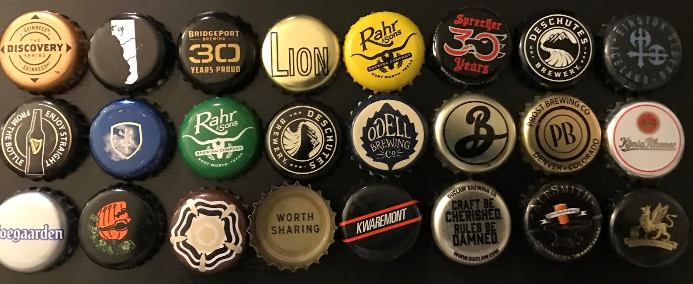
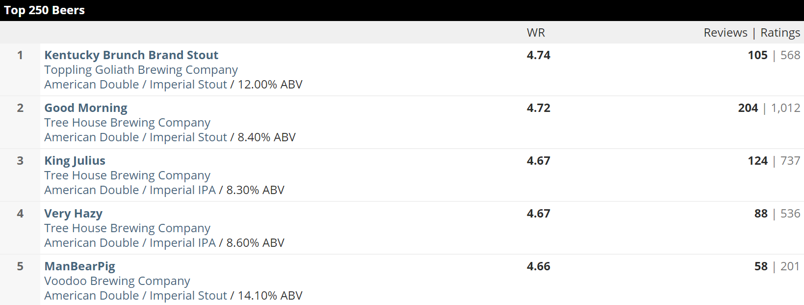
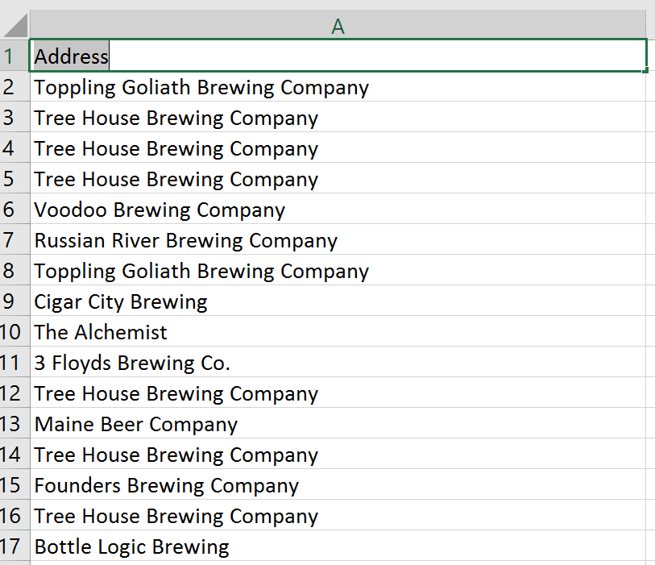

After completing my previous post on food I wanted to work on something which I have started to explore recently,craft beer. A friend of mine introduced me to a beer club membership prior to which I never knew anything beyond the Corona’s . Then began the collection and here it is, what have so far.

So when I started searching for the data google lead me to Beer Advocate. Below is how the raw html table from the website looked like.

I have used R to scrape the table from the website using R. The library I am using here to scrape is Rvest. Below is the code on how to get the data.
library("rvest")
# Enter the url below
url <- "https://www.beeradvocate.com/lists/top/"
beer <- url %>%
html() %>%
## to get xpath for a table ,right click on the table,inspect,
## go to the table tag ,right click again and go to copy xpath .. phew ...
## not clear click here for <a href="http://www.wikihow.com/Find-XPath-Using-Firebug">more details</a>
html_nodes(xpath = '//*[@id="extendedInfo"]/a[1]') %>%
html_table()
beer <- beer[[1]]
head(beer)
write.table(
beer,
file = "topus250.csv",
quote = TRUE,
sep = ",",
row.names = FALSE
)
Now that I got the scraped data and address parameter as the name of the brewing company , it looks something like this.

The next step here is to get the address geocoded which would help me plot this on a map . For this I have used the library ggmap.
library("rvest")
library(ggmap)
# Read in the CSV data and store it in a variable
origAddress <- read.csv("topus250.csv", stringsAsFactors = FALSE)
# Initialize the data frame
geocoded <- data.frame(stringsAsFactors = FALSE)
# Loop through the addresses to get the latitude and longitude of each address
# and add it to the origAddress data frame in new columns lat and lon
for(i in 1:nrow(origAddress))
{
# Print("Working...")
result <- geocode(origAddress$Address[i], output = "latlona", source = "google")
origAddress$lon[i] <- as.numeric(result[1])
origAddress$lat[i] <- as.numeric(result[2])
origAddress$geoAddress[i] <- as.character(result[3])
origAddress$state[i] <- as.character(result[3])
}
# Save the output as csv to the working directory
write.csv(result, file = geocoded.csv)
Now I got the data cleaned, gecoded and ready to plot it on the map. Another task …another library. Here I have used the leaflet library to add the basemap,plot the points , add clusters and markers to it. All it took was a couple of lines in R !! As a continuation to this project.
library(leaflet)
library(dplyr)
lf <-
read.csv("beer_lat_long.csv", stringsAsFactors = FALSE) # Brings in the file 'ctlist.csv'
map <-
leaflet(lf) %>% addTiles('http://{s}.basemaps.cartocdn.com/dark_all/{z}/{x}/{y}.png',
attribution = 'Map tiles by <a href="http://stamen.com">Stamen Design</a>, <a href="http://creativecommons.org/licenses/by/3.0">CC BY 3.0</a> — Map data © <a href="http://www.openstreetmap.org/copyright">OpenStreetMap</a>')
map %>% setView(-95.712891, 37.09024, zoom = 5)
#add cluster
map %>% addMarkers(
popup = paste(
"Brewer:",
lf$company,
"Beer Name:",
lf$name,
"Rank:",
lf$rank
),
clusterOptions = markerClusterOptions()
)